雙北景點推薦
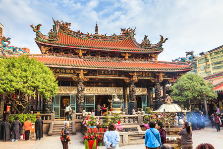
龍山寺
興建於1738年經歷許多次天災人禍的摧毀、重建
至今不僅是日、韓觀光客必去之地
也依舊是台灣人重要的信仰寄託之地
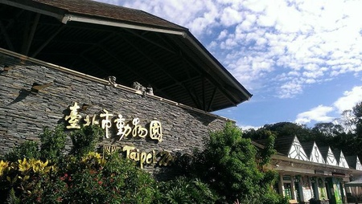
台北市立動物園
大熊貓、無尾熊、企鵝、草原動物、熱帶動物一網打盡
各種動物的介紹說明也很清晰
簡直是寓教於樂、老少咸宜的最佳選擇
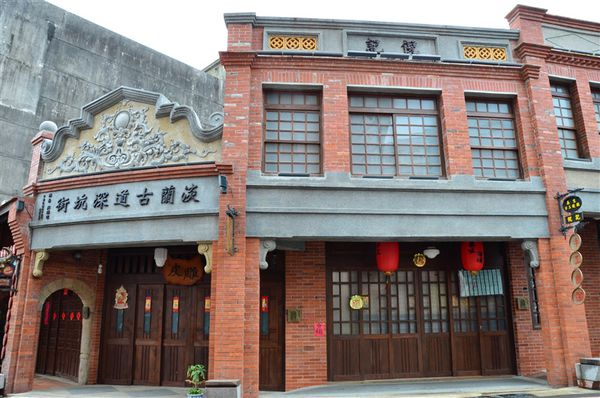
深坑老街
雖然短短200公尺的老街
但百年的歷史建築超值得一訪
最叫人流連忘返的，就是臭豆腐
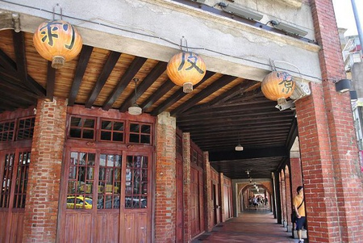
剝皮寮歷史街區
這裡閩南式和巴洛克式的古建築意外地被完整保留
現在街區常有展覽活動，也是電影、外拍愛好的場地喔
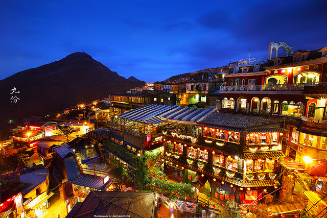
九份老街
無論何時皆有絡繹不絕的人潮，
小吃芋仔番薯、九份第一家茶坊以及九份文史工作室都設置於此，
還有觀景台可遠眺海景
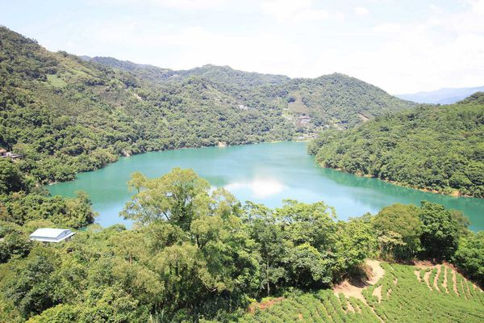
千島湖
石碇的秘境之一，天然的登山步道周圍種植了許多的茶樹，
讓人可以一邊享受優美的風景搭配茶樹的清香
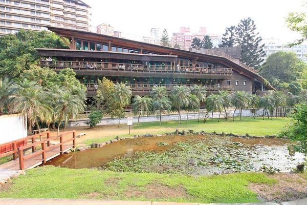
北投圖書館
位於北投溫泉公園內，建築的造形非常引人注目，
除了是當地人讀書的地方同時也是來北投公園的遊客們休息的好去處
桃園景點推薦
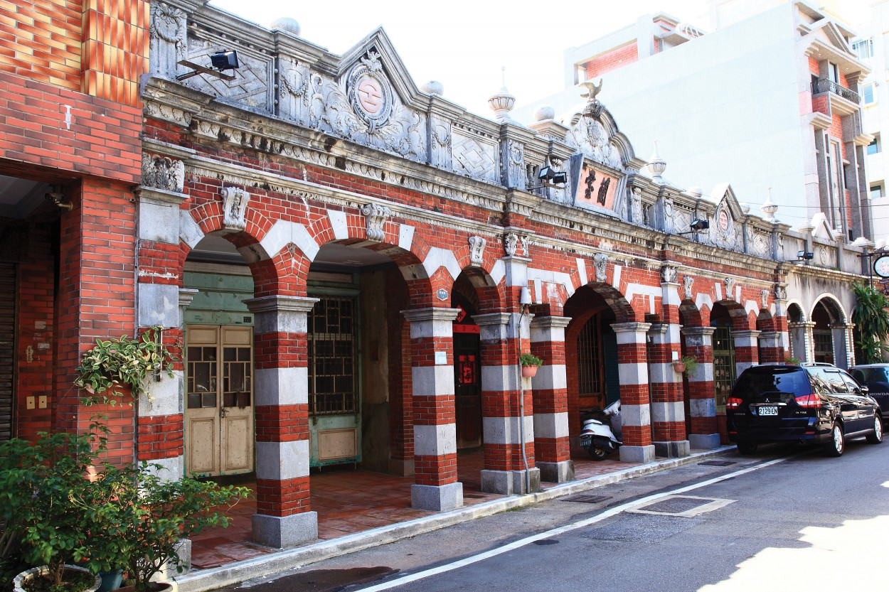
大溪老街
桃園最早發展的地方，各商號融合巴洛克式繁飾主義和閩南傳統裝飾圖案，形成一種大溪專有的特色
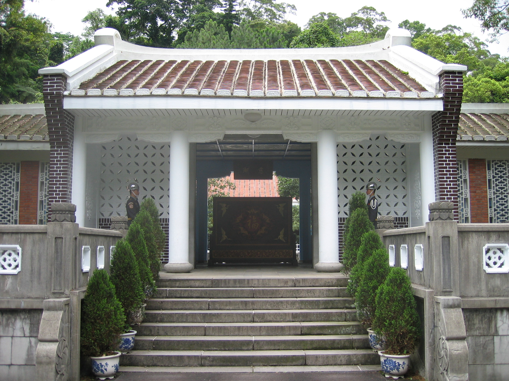
慈湖陵寢
因中華民國先總統蔣介石先生長眠於此而聞名。慈湖分為前、後慈湖，湖岸水色迷人，楊柳垂青頗有江南風光之美
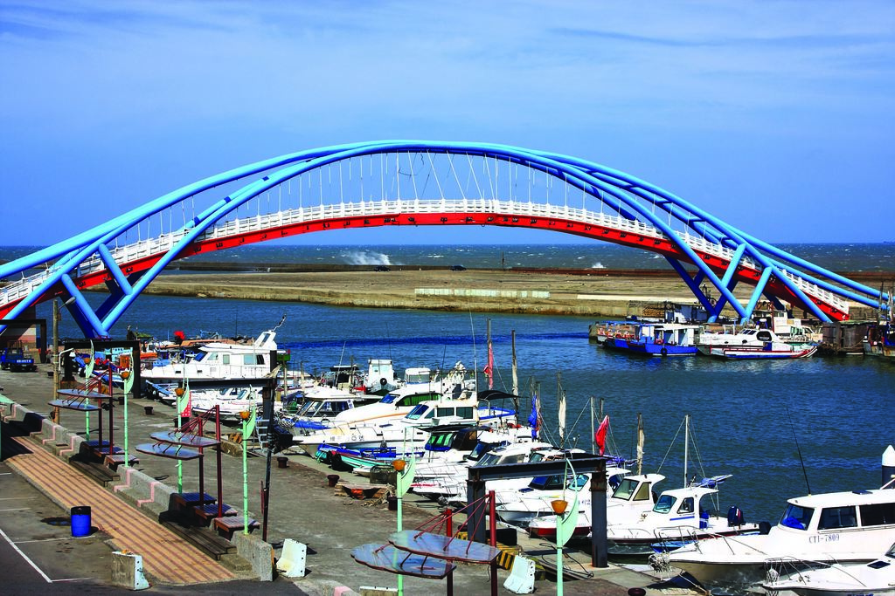
永安漁港
是中壢區漁會轄區內的唯一漁港，屬於第二類漁港，亦為臺灣唯一以客家族群為主體的漁港，漁獲量主要供銷外縣市為主
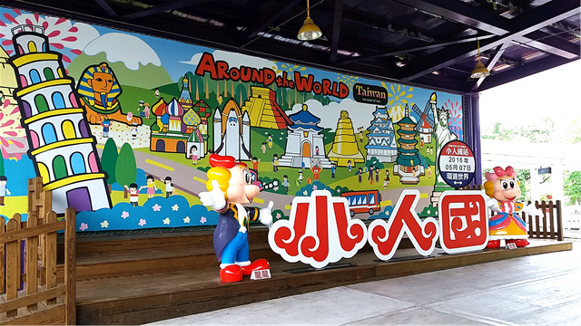
小人國主題樂園
位於桃園市龍潭區，成立於民國73年7月7日，是台灣著名的主題遊樂園。裡頭有4種不同的遊樂主題，其中以『迷你世界』最著名
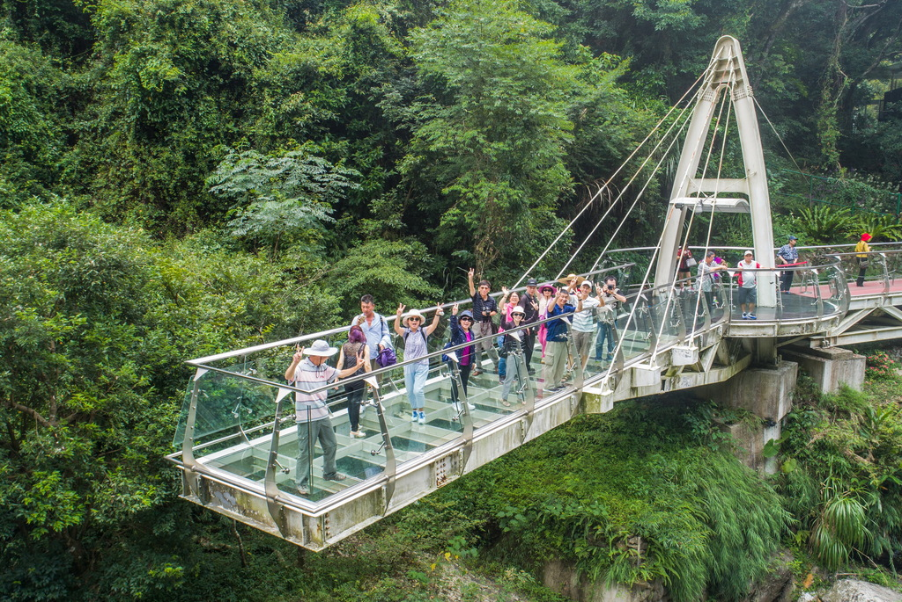
小烏來天空步道
懸掛於小烏來瀑布上方，遊客只要站上距離瀑布底70公尺高的玻璃平台上，就能居高臨下欣賞小烏來溪谷的秀麗美景
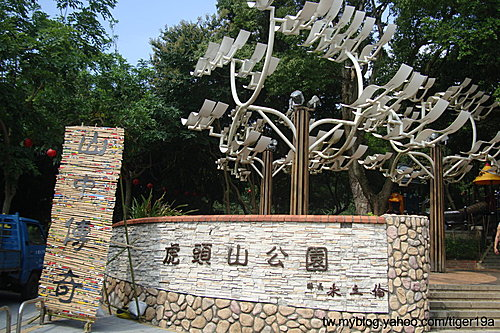
虎頭山
舊名為板崁山，海拔251公尺，離桃園市中心甚近，成為桃園市民假日休閒旅遊的好去處。虎頭山因其山勢外形有如猛虎而得
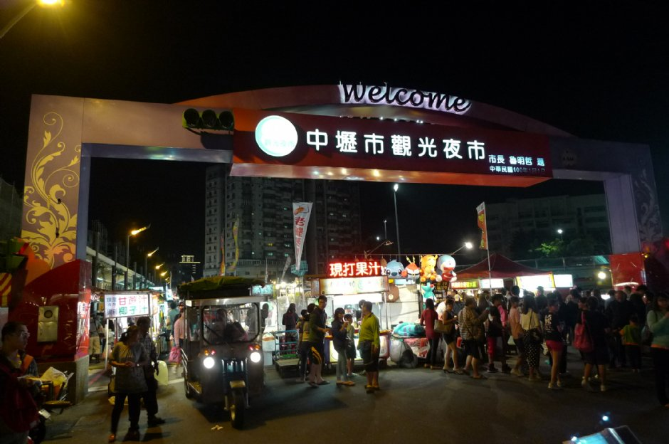
中壢觀光夜市
整條夜市長約700公尺，人潮密集度相當高，也早已成為桃園數一數二大的夜間市集，更成為當地民眾夜間逛街的好選擇